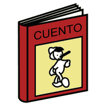
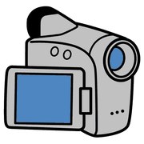
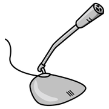

Modulo 9, creare e programmare
Digital storytelling
Raccontare una storia con immagini, voci e suoni: come progettarla, come dividere il lavoro e con quali strumenti.
Che cos'è

racconto
video tablet
tabletÈ la reinterpretazione di una storia trasformata in prodotto digitale: si aggiungono immagini, suoni, voci narranti e sfondi sonori.
Book Creator, Canva, iMovie, Audacity
ognuno trova
il suo ruolo
Dal progetto al prodotto
 pensare
pensare scrivere
scrivere
registrare guardare
guardare- Lavoro di gruppoSi dividono i ruoli.
- Stesura della storia
- Ricerca e creazione dei materialiGrafica: personaggi, ambienti, oggetti. Suono: dialoghi, rumori, colonna sonora.
- Creazione delle partiOgni gruppo realizza la sua.
- ComposizioneSi assemblano tutti gli elementi.
Ogni fase è una porta d'ingresso diversa: c'è chi disegna, chi registra la voce, chi monta. È un'attività naturalmente coerente con l'UDL.